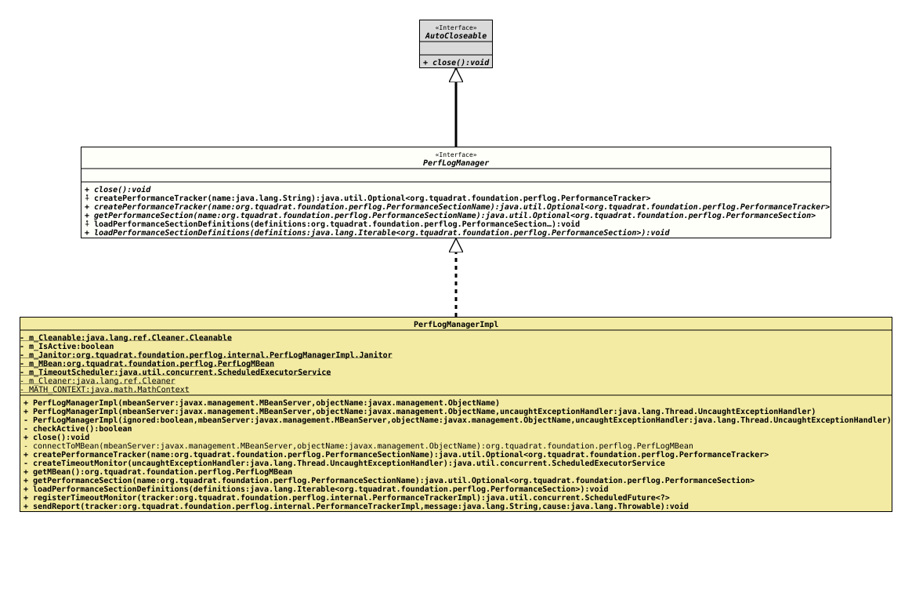

Interface PerfLogManager
- All Superinterfaces:
AutoCloseable
- All Known Implementing Classes:
PerfLogManagerImpl
@ClassVersion(sourceVersion="$Id: PerfLogManager.java 1211 2026-05-01 15:24:10Z tquadrat $")
@API(status=STABLE,
since="0.25.0")
public sealed interface PerfLogManager
extends AutoCloseable
permits PerfLogManagerImpl
This interface describes the MBean for the Foundation Performance Logging and Monitoring.
- Author:
- Thomas Thrien (thomas.thrien@tquadrat.org)
- Version:
- $Id: PerfLogManager.java 1211 2026-05-01 15:24:10Z tquadrat $
- Since:
- 0.25.0
- UML Diagram
-

UML Diagram for "org.tquadrat.foundation.perflog.PerfLogManager"
{kind=link}
-
Method Summary
Modifier and TypeMethodDescriptionvoidclose()default Optional<PerformanceTracker> Creates a performance tracker for thePerformanceSectionwith the given name.Creates a performance tracker for thePerformanceSectionwith the given name.Returns the performance section specified by the given name.voidloadPerformanceSectionDefinitions(Iterable<PerformanceSection> definitions) Loads thePerformanceSectiondefinitions.default voidloadPerformanceSectionDefinitions(PerformanceSection... definitions) Loads thePerformanceSectiondefinitions.
-
Method Details
-
close
void close()After
close()is called, calls to other methods of this instance may result in anIllegalStateExceptionto be thrown.- Specified by:
closein interfaceAutoCloseable
-
createPerformanceTracker
default Optional<PerformanceTracker> createPerformanceTracker(String name) throws IllegalStateException Creates a performance tracker for the
PerformanceSectionwith the given name.The return value will be empty if the performance section is currently ignored.
- Parameters:
name- The name of the performance section.- Returns:
- An instance of
Optionalthat holds the new tracker. - Throws:
IllegalStateException-close()was already called on this instance.
-
createPerformanceTracker
Optional<PerformanceTracker> createPerformanceTracker(PerformanceSectionName name) throws IllegalStateException Creates a performance tracker for the
PerformanceSectionwith the given name.The return value will be empty if the performance section is currently ignored.
- Parameters:
name- The name of the performance section.- Returns:
- An instance of
Optionalthat holds the new tracker. - Throws:
IllegalStateException-close()was already called on this instance.
-
getPerformanceSection
Optional<PerformanceSection> getPerformanceSection(PerformanceSectionName name) throws IllegalStateException Returns the performance section specified by the given name.
Delegates to
PerfLogMBean.getPerformanceSection(PerformanceSectionName)- Parameters:
name- The name of the performance section.- Returns:
- An instance of
Optionalthat holds the retrieved performance section. - Throws:
IllegalStateException-close()was already called on this instance.
-
loadPerformanceSectionDefinitions
default void loadPerformanceSectionDefinitions(PerformanceSection... definitions) throws IllegalStateException Loads thePerformanceSectiondefinitions.- Parameters:
definitions- The definitions for the performance sections.- Throws:
IllegalStateException-close()was already called on this instance.
-
loadPerformanceSectionDefinitions
void loadPerformanceSectionDefinitions(Iterable<PerformanceSection> definitions) throws IllegalStateException Loads thePerformanceSectiondefinitions.- Parameters:
definitions- The definitions for the performance sections.- Throws:
IllegalStateException-close()was already called on this instance.
-